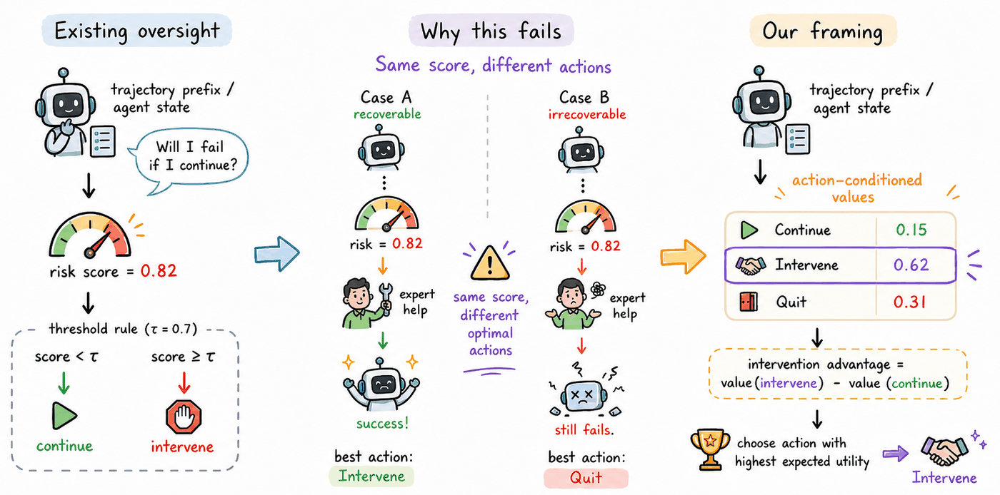
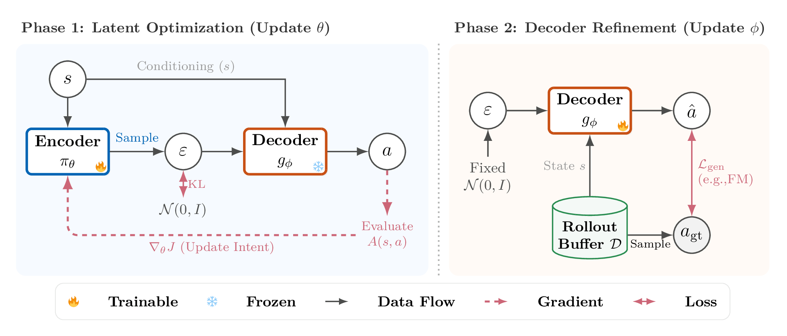
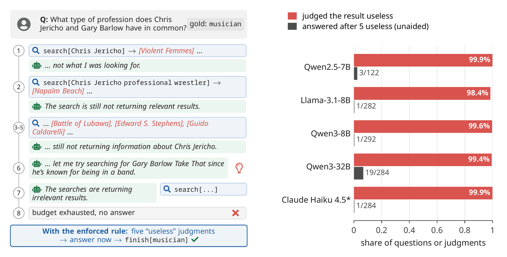

NeurIPS 2026
Calibration Is Not Control
Predicting that an agent might fail does not tell us whether intervening will help. We study intervention value to make better oversight decisions.
Research Assistant / Singapore
张楚彬
I am Chubin Zhang (张楚彬), currently a Research Assistant in Prof. Bo An's group at Nanyang Technological University (NTU).
My research focuses on reinforcement learning, with recent work on generative policies and LLM agents. I am also exploring research directions in embodied AI.
Open to PhD opportunities for 2027 and research internships.
01 / Updates
New preprint: Judged Useless, Queried Anyway.
Calibration Is Not Control and TAPS were accepted to NeurIPS 2026.
LexChain was accepted to AAAI 2026.
02 / Selected Work

NeurIPS 2026
Predicting that an agent might fail does not tell us whether intervening will help. We study intervention value to make better oversight decisions.

ICML 2026
GoRL separates tractable latent policy optimization from flow and diffusion action generation, making expressive policies easier to train through interaction.
03 / Publications
NeurIPS 2026
An early version, Time-Annealed Perturbation Sampling, appeared at the ICML 2026 Workshop on SPIGM.
ICML 2026
An early version, Decoupling Tilting from Transport, appeared at the ICLR 2026 Workshop on ReALM-GEN.

04 / Background
2026 - present
2025 - 2026
2024 - 2025